第03讲 角

课程标准 | 学习目标 |
①掌握角的概念及角的表示方法 ②掌握角的有关计算 | 1．掌握角的概念及角的表示方法，钟面角、方位角，并掌握其运算,并能进行角度的互换；掌握运用尺规作已知角，相等角等； 2．会利用角平分线的意义进行有关表示或计算;并掌握角大小比较方法. |

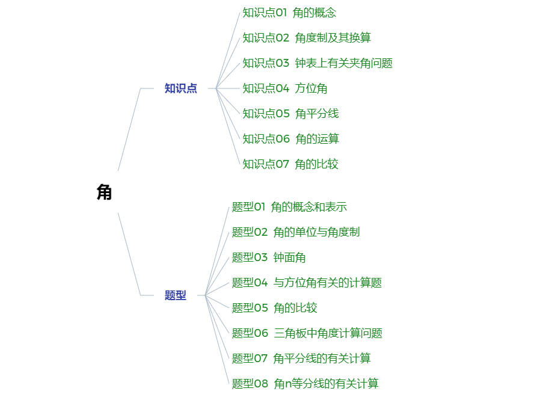
知识点01 角的概念
1.角的定义：
（1）定义一：有公共端点的两条射线组成的图形叫做角，这个公共端点是角的顶点，这两条射线是角的两条边．如图1所示，角的顶点是点O，边是射线OA、OB．

（2）定义二：一条射线绕着它的端点旋转而形成的图形，射线旋转时经过的平面部分是角的内部．如图2所示，射线OA绕它的端点O旋转到OB的位置时，形成的图形叫做角，起始位置OA是角的始边，终止位置OB是角的终边．
注意：（1）两条射线有公共端点，即角的顶点；角的边是射线；角的大小与角的两边的长短无关．
（2）平角与周角：如图1所示射线OA绕点O旋转，当终止位置OB和起始位置OA成一条直线时，所形成的角叫做平角，如图2所示继续旋转，OB和OA重合时，所形成的角叫做周角．

2.角的表示法：角的几何符号用“∠”表示，角的表示法通常有以下四种：

注意：用数字或小写希腊字母表示角时，要在靠近角的顶点处加上弧线，且注上阿拉伯数字或小写希腊字母．
3.角的画法
（1）用三角板可以画出30°、45°、60°、90°等特殊角．
（2）用量角器可以画出任意给定度数的角．
（3）利用尺规作图可以画一个角等于已知角．
【即学即练1】
1．（23-24六年级下·山东烟台·期中）在下列四个图形中，能用
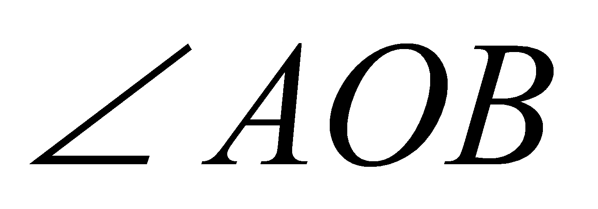
， ，
，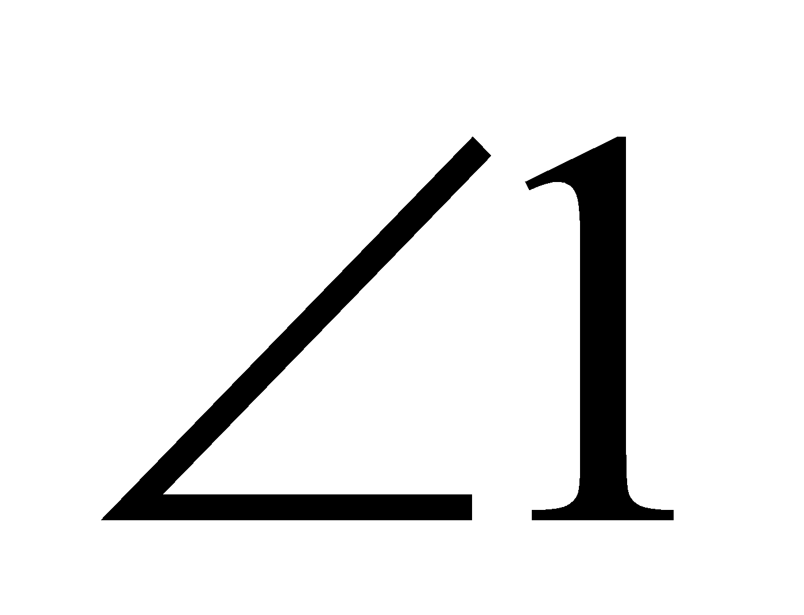
三种方法表示同一个角的图形是（ ）A． B． C． D．
2．（23-24六年级下·全国·假期作业）如图，用三个大写字母表示所标记的各角．
（1）可以表示为 ；
（2） 可以表示为 ；
可以表示为 ；
（3） 可以表示为 ．
可以表示为 ．
知识点02 角度制及其换算
角的度量单位是度、分、秒，把一个周角平均分成360等份，每一份就是1°的角，1°的 为1分，记作“1′”，1′的为1秒，记作“1″”．这种以度、分、秒为单位的角的度量制，叫做角度制．
为1分，记作“1′”，1′的为1秒，记作“1″”．这种以度、分、秒为单位的角的度量制，叫做角度制．
1周角＝360°，1平角＝180°，1°＝60′，1′＝60″．
注意：在进行有关度分秒的计算时，要按级进行，即分别按度、分、秒计算，不够减，不够除的要借位，从高一位借的单位要化为低位的单位后再进行运算，在相乘或相加时，当低位得数大于60时要向高一位进位．
【即学即练2】
1．（23-24七年级下·山东淄博·阶段练习）
 ′ ″；
′ ″；
知识点03 钟表上有关夹角问题
钟表中共有12个大格，把周角12等分、每个大格对应30°的角，分针1分钟转6°，时针每小时转30°，时针1分钟转0.5°，利用这些关系，可帮助我们解决钟表中角度的计算问题．
【即学即练3】
1．（23-24六年级下·全国·假期作业）小明每天下午 放学，此时钟面上时针和分针的夹角是 ．
放学，此时钟面上时针和分针的夹角是 ．
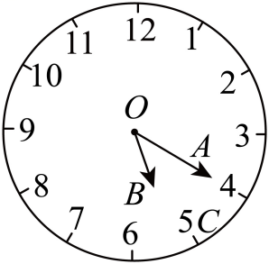
知识点04 方位角
在航行和测绘等工作中，经常要用到表示方向的角．例如，图中射线OA的方向是北偏东60°；射线OB的方向是南偏西30°．这里的“北偏东60°”和“南偏西30°”表示方向的角，就叫做方位角．

注意：（1）正东，正西，正南，正北4个方向不需要用角度来表示．
（2）方位角必须以正北和正南方向作为“基准”，“北偏东60°”一般不说成“东偏北30°” ．
（3）在同一问题中观察点可能不止一个，在不同的观测点都要画出表示方向的“十字线”，确定其观察点的正东、正西、正南、正北的方向．
（4）图中的点O是观测点，所有方向线(射线)都必须以O为端点．
【即学即练4】
1．（23-24六年级下·黑龙江绥化·开学考试）如图是依依家到学校的行走路线图．

(1)小公园在依依家的 偏 米处．
(2)小公园在银行的 偏 米处．
(3)学校西偏南 ，距离
，距离
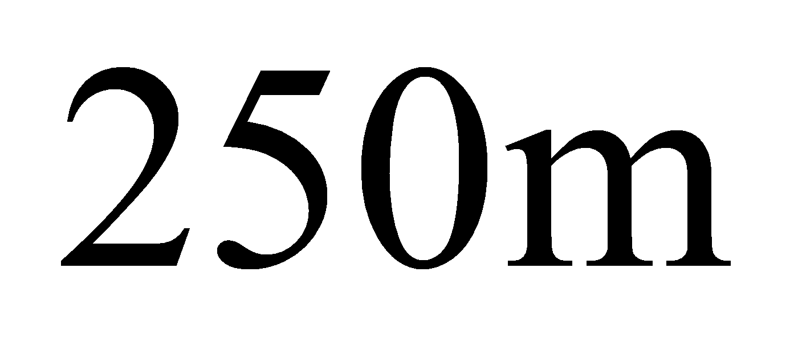
处是超市，请用★标出超市的位置．（ 表示
表示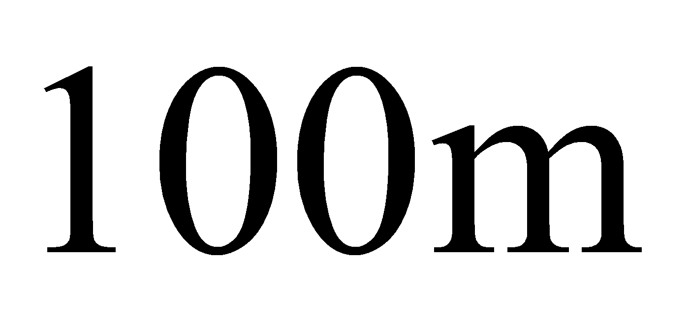
）知识点05 角平分线
从一个角的顶点出发，把这个角分成相等的两个角的射线，叫做这个角的平分线．如图所示，OC是∠AOB的角平分线，∠AOB＝2∠AOC＝2∠BOC，∠AOC＝∠BOC = ∠AOB．
∠AOB．

注意：由角平分线的概念产生的合情推理其思维框架与线段中点的思维框架一样．
【即学即练5】
1．（23-24七年级上·江西赣州·期末）如图，已知 是内部任意的一条射线，
是内部任意的一条射线， 、
、
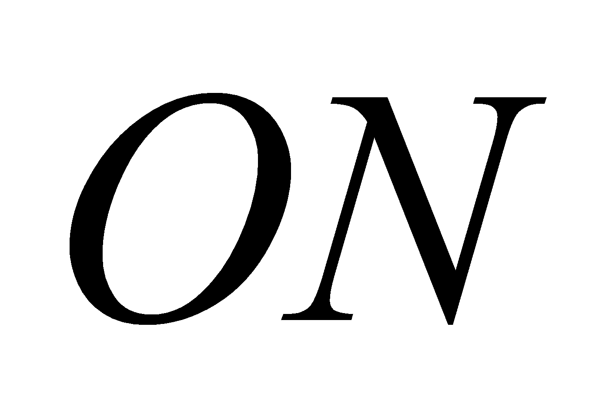
分别是 ，
， 的平分线．
的平分线．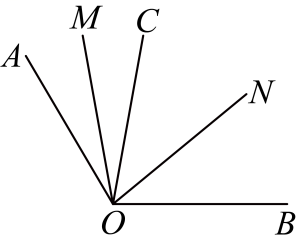
(1)若 ，求
，求 的度数；
的度数；
(2)若 ，则
，则 ；若
；若 ，则 ．
，则 ．
知识点06 角的运算
如图所示，∠AOB是∠1与∠2的和，记作：∠AOB＝∠1+∠2；∠1是∠AOB与∠2的差，记作：∠1＝∠AOB-∠2．

注意：(1)用量角器量角和画角的一般步骤：①对中(角的顶点与量角器的中心对齐)；②重合(一边与刻度尺上的零度线重合)；③读数(读出另一边所在线的度数)．
(2) 利用三角板除了可以做出30°、45°、60°、90°外，根据角的和、差关系，还可以画出15°，75°，105°，120°，135°，150°，165°的角．
【即学即练6】
1．（23-24六年级下·山东烟台·期中）如图，已知是内部的一条射线，图中有三个角：，和，当其中一个角是另一个角的两倍时，称射线为的“巧分线”．如果 ，
， 是
是 的“巧分线”，则
的“巧分线”，则 的度数为 ．
的度数为 ．
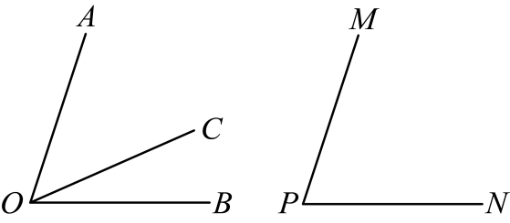
知识点07 角的比较
角的大小比较与线段的大小比较相类似，方法有两种：
方法1：度量比较法．先用量角器量出角的度数，然后比较它们的大小．
方法2：叠合比较法．把其中的一个角移到另一个角上作比较．
如比较∠AOB和∠A′O′B′的大小： 如下图，由图（1）可得∠AOB＜∠A′O′B′；由图(2)可得∠AOB＝∠A′O′B′；由图(3)可得∠AOB＞∠A′O′B′．

【即学即练7】
1．（23-24七年级下·山东菏泽·期中）用叠合的方法比较和
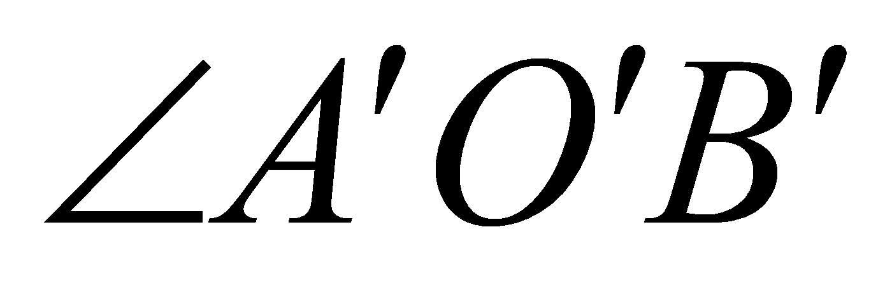
两个角的大小，先将的顶点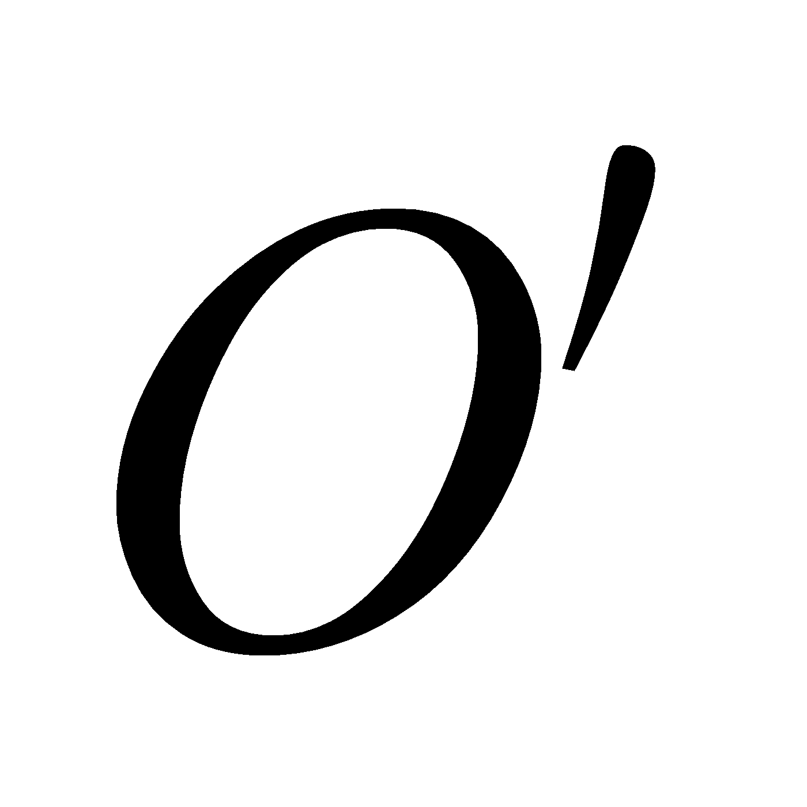
与的顶点O重合，边 与边
与边 重合，边
重合，边 落在了的内部，则和的关系是（ ）
落在了的内部，则和的关系是（ ）A． B．
B．
C．
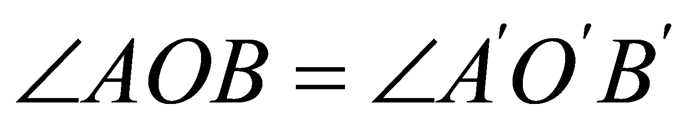
D．不确定题型01 角的概念和表示
【典例1】（24-25七年级上·全国·单元测试）下列说法错误的是（ ）
A．由两条具有公共端点的射线组成的图形就是角
B．角是由始边绕着端点旋转形成的图形
C．角是由两条直线相交形成的图形
D．角的两边是射线
【变式1】（23-24七年级上·贵州六盘水·期末）下列四个图形中，能用 ，
， ，
， 三种方法表示同一个角的是（ ）
三种方法表示同一个角的是（ ）
A．
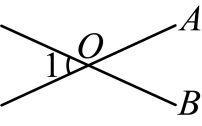
B．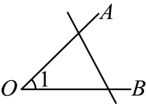
C．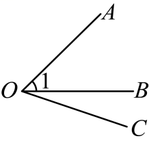
D．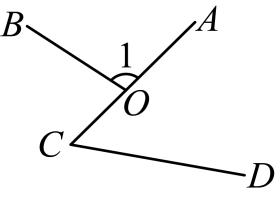
【变式2】（23-24七年级下·山东淄博·期末）下列图中的也可以用表示的是（ ）
A．
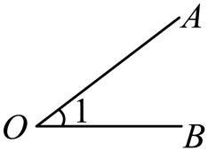
B．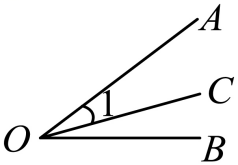
C．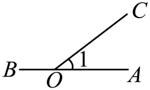
D．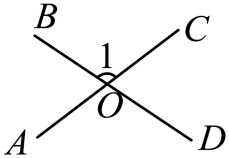
【变式3】（23-24七年级下·山东聊城·期中）如图所示，能用，，三种方法表示同一个角的图形是（ ）
A．
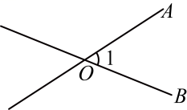
B．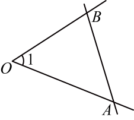
C．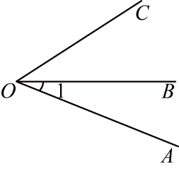
D．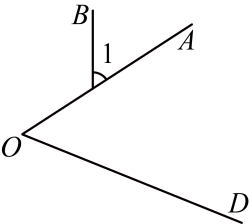
题型02 角的单位与角度制
【典例2】（23-24六年级下·山东济南·开学考试）用度、分、秒表示
 ′ ″
′ ″
【变式1】（23-24七年级上·天津河西·期末）
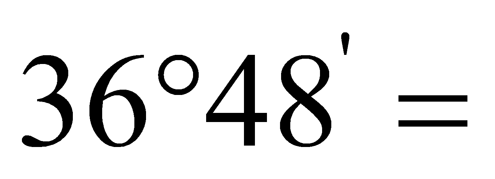
．【变式2】（23-24七年级下·山东淄博·期中）
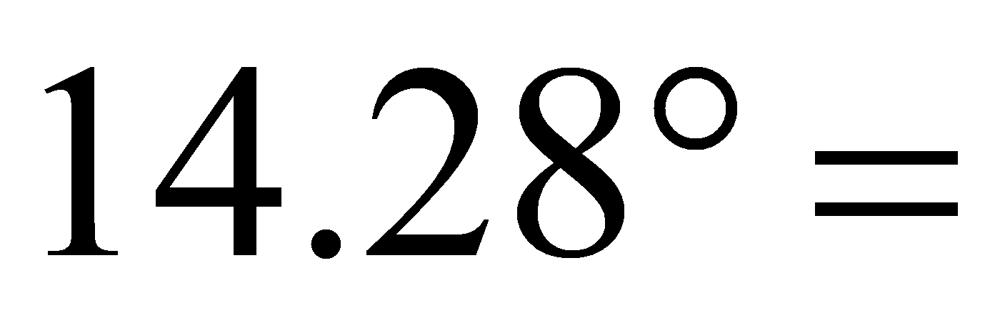
度 分 秒．【变式3】（23-24七年级上·江西吉安·期末）
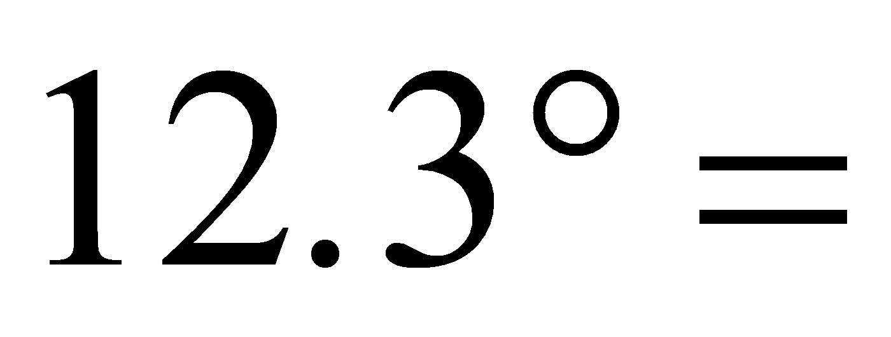
 ；
； °
°题型03 钟面角
【典例3】（24-25七年级上·全国·单元测试）自习课上，一名同学抬头看见挂在黑板上方的时钟显示为
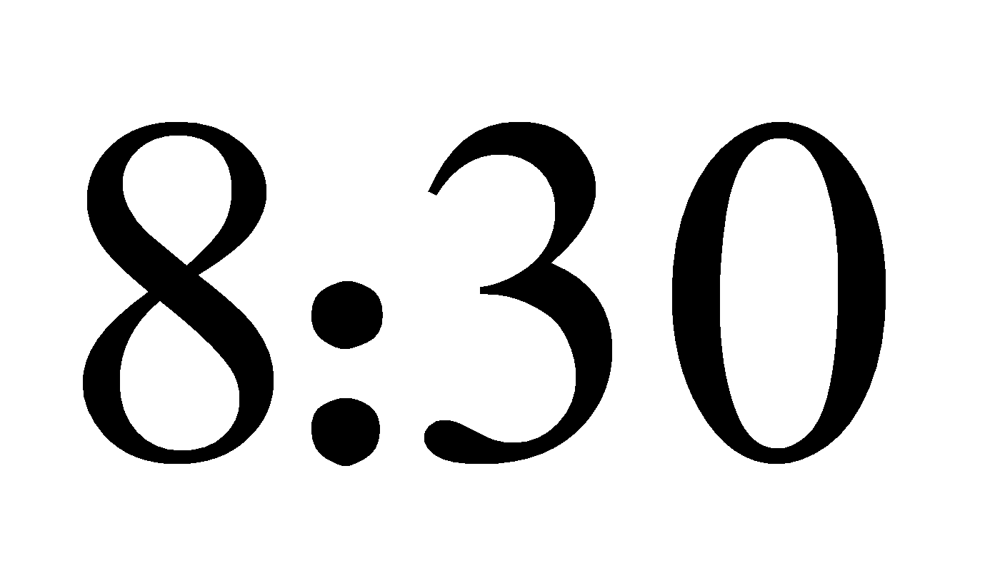
，此时时针与分针的夹角是 ．【变式1】（23-24七年级上·湖南永州·期末）若此时时钟表上的时间是
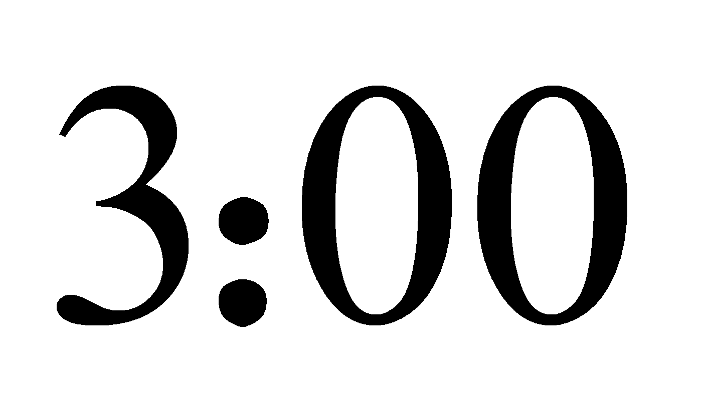
分，则时针与分针的夹角为 度．【变式2】（23-24七年级下·山东日照·开学考试）2点 分钟时，钟表的时针与分针形成的夹角的度数是 ．
分钟时，钟表的时针与分针形成的夹角的度数是 ．
【变式3】（23-24六年级下·黑龙江哈尔滨·期末）如图是一个时钟的钟面，此时钟面上的时间是下午1点30分，时钟的分针与时针所成的钝角的度数为 度．
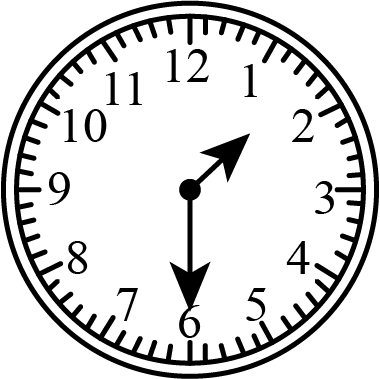
题型04 与方位角有关的计算题
【典例4】（23-24七年级上·四川成都·期末）如图，已知轮船 在灯塔
在灯塔 的北偏东
的北偏东 方向，轮船
方向，轮船 在灯塔的南偏东
在灯塔的南偏东
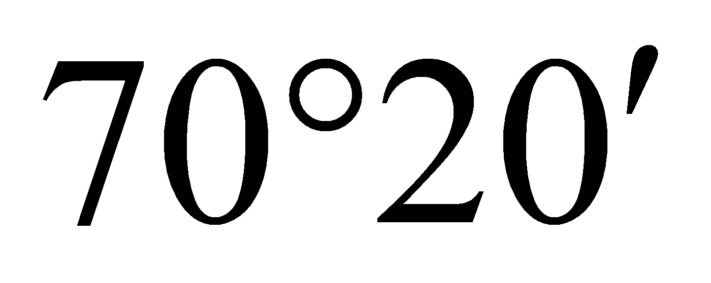
方向，则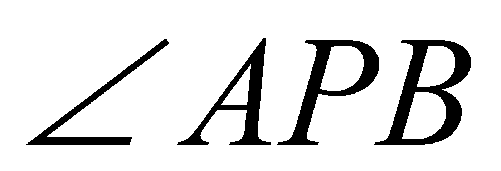
的度数为 ．
【变式1】（23-24七年级下·广西钦州·期中）如图，李华同学从点沿北偏东 的方向行走到点，再从点沿南偏西
的方向行走到点，再从点沿南偏西 方向行走到点
方向行走到点 ，则
，则 的大小为 ．
的大小为 ．
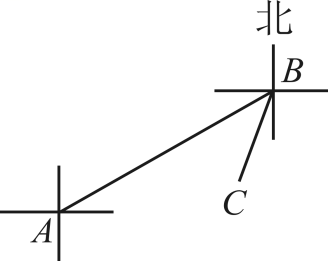
【变式2】（23-24七年级下·北京·期中）如图，一艘船从A点出发先沿北偏东方向航行，到达B点时发现前方有冰山，紧急向左进行了90°的转弯，然后沿着 方向航行，则
方向航行，则
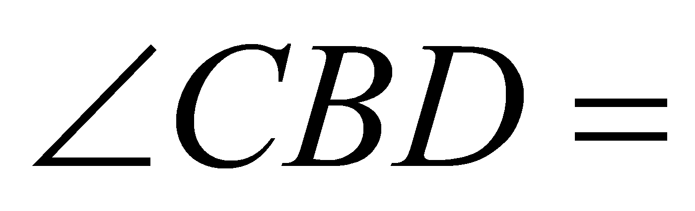
．【变式3】（23-24七年级上·山东临沂·期末）如图，射线 的方向是北偏东
的方向是北偏东 ，射线
，射线 的方向是北偏西
的方向是北偏西 ，
， ，射线
，射线 是的反向延长线．
是的反向延长线．
(1)射线 的方向是________；
的方向是________；
(2)求 的度数；
的度数；
(3)若射线 平分，求
平分，求 的度数．
的度数．
题型05 角的比较
【典例5】（23-24七年级上·江苏扬州·期末）如图，用同样大小的三角板此较 和
和 的大小，下列判断正确的是（ ）
的大小，下列判断正确的是（ ）
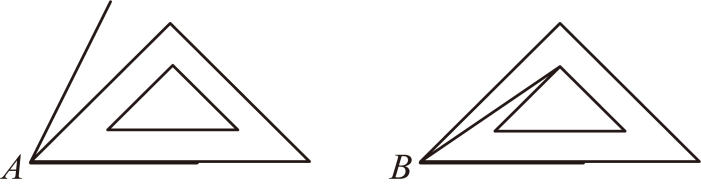
A． B．
B．
C． D．没有量角器，无法确定
D．没有量角器，无法确定
【变式1】（23-24七年级上·河北保定·期末）如图，下列各式中不一定正确的是（ ）
A．
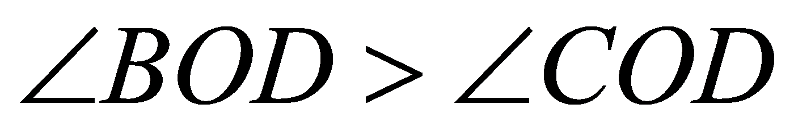
B．
C． D．
D．
【变式2】（23-24七年级下·山东潍坊·期中）如图，已知是 内部的一条射线，下列说法一定正确的是（ ）
内部的一条射线，下列说法一定正确的是（ ）

A．
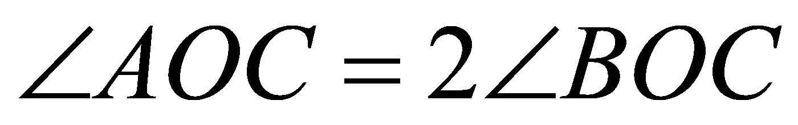
B．
C．可以用表示 D．与表示同一个角
【变式3】（23-24六年级下·山东淄博·期中）如图，正方形网格中每个小正方形的边长都为1，则与 的大小关系为（ ）
的大小关系为（ ）
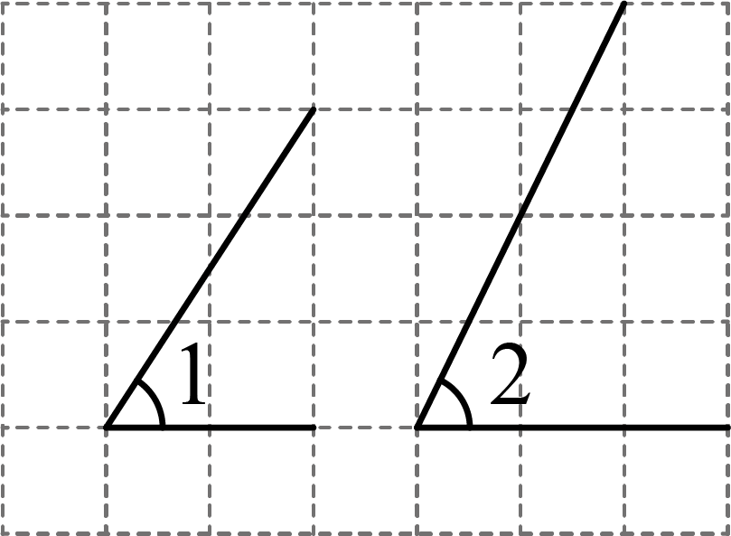
A． B．
B．
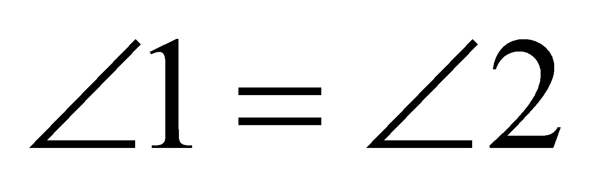
C．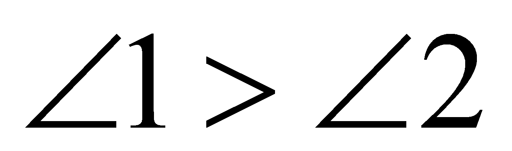
D．无法比较题型06 三角板中角度计算问题
【典例6】（23-24七年级上·重庆·期末）如图，将一副三角尺叠放在一起，使直角顶点重合于点O，若
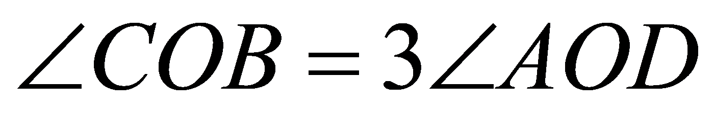
，为 的角平分线，则
的角平分线，则 的度数是（ ）
的度数是（ ）A． B． C．
B． C． D．
D．
【变式1】（23-24七年级下·辽宁鞍山·开学考试）如图，将一副三角板摆成如图形状，如果
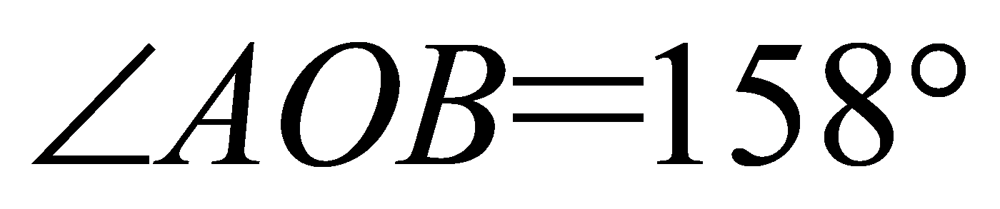
，那么的度数是 ．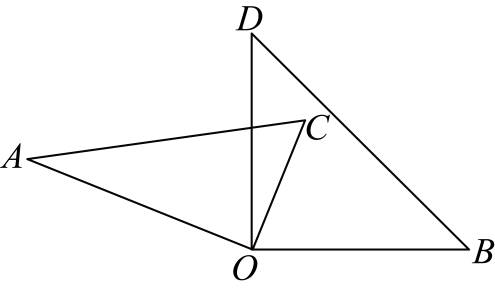
【变式2】（22-23七年级上·河南洛阳·期末）将一副直角三角尺按如图1方式叠放， ．如图2，现将三角尺
．如图2，现将三角尺 固定，令三角尺
固定，令三角尺 绕顶点A顺时针旋转一周．若要使
绕顶点A顺时针旋转一周．若要使
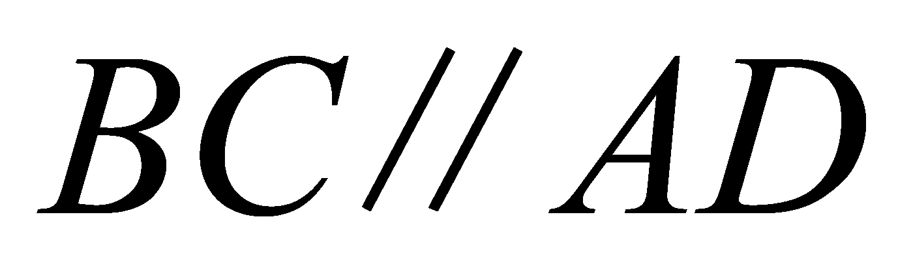
，则 的度数为 ．
的度数为 ．【变式3】（24-25八年级上·河北邢台·开学考试）直角三角板的一个顶点O在直线 上，
上， ．
．
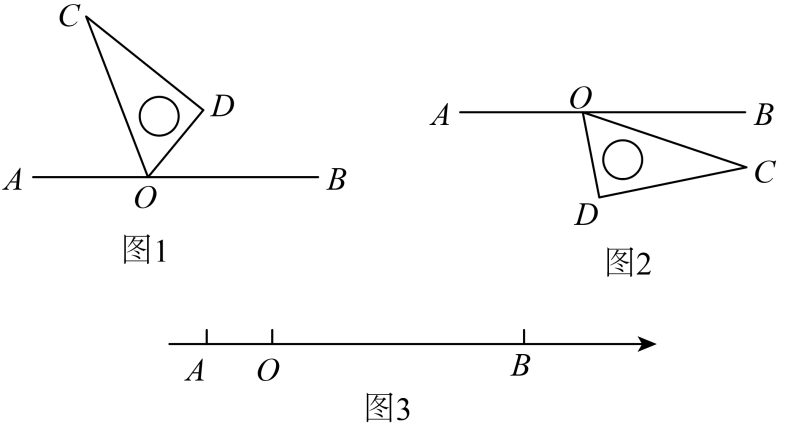
(1)如图1，三角板在直线上方．
①若
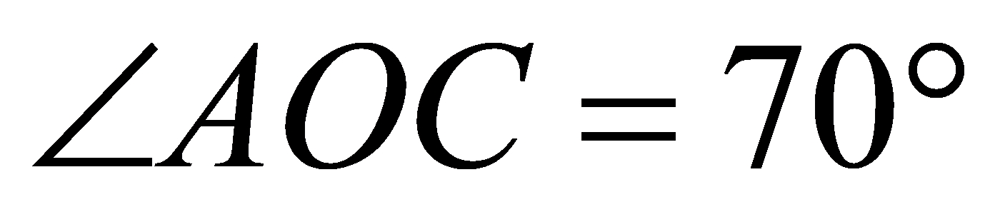
，则 ；
；②若平分，则 ；
(2)若三角板
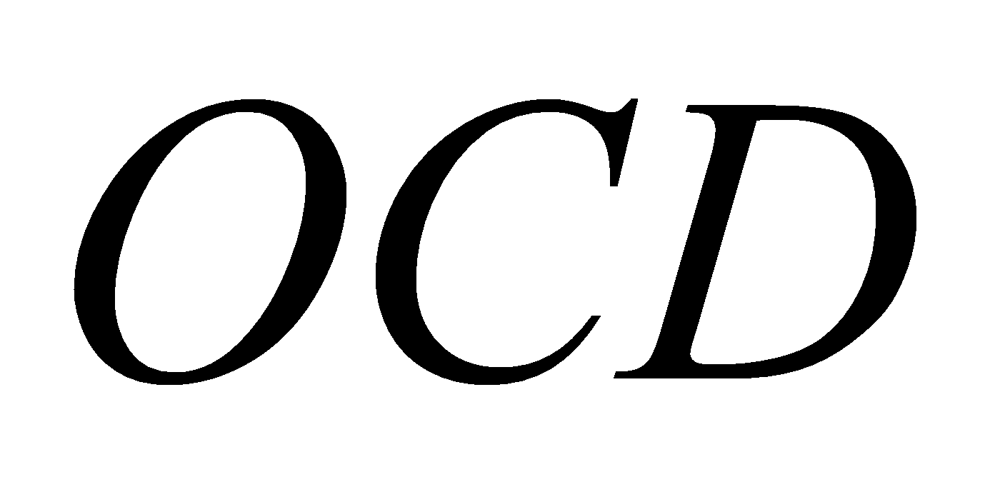
在直线下方， ．求的度数；
．求的度数；(3)类比探究：如图3，在数轴上，点 为原点，点表示的数是
为原点，点表示的数是 ，
， ，线段
，线段 在数轴上移动，且
在数轴上移动，且 （点在点
（点在点 的左侧），当
的左侧），当 时，求出点表示的数．
时，求出点表示的数．
题型07 角平分线的有关计算
【典例7】（23-24七年级上·全国·单元测试）如图，点A，O，B在一条直线上， ，
， ，是的平分线．
，是的平分线．
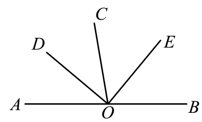
(1)求和 的度数；
的度数；
(2)是 的平分线吗？为什么？
的平分线吗？为什么？
【变式1】（23-24七年级上·广东惠州·期末）（1）如图1，射线在的内部， 平分，
平分， 平分
平分 ，若
，若 ，求
，求 的度数；
的度数；
（2）射线，在的内部，平分，平分 ，若
，若 ，
， ，求的度数；
，求的度数；
（3）在（2）中， ，
，
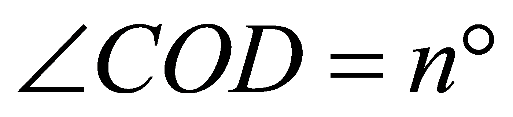
，其他条件不变，请用含 ，
， 的代数式表示
的代数式表示 的度数（不用说理）．
的度数（不用说理）．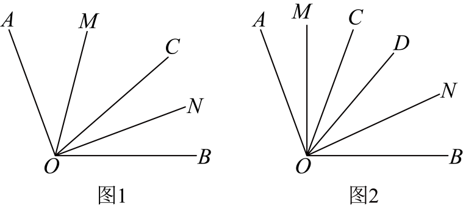
【变式2】（23-24七年级上·四川达州·期末）如图①，已知射线、在的内部在右侧）， ，．
，．
(1)如果射线平分， ，如图②，则
，如图②，则 ；
；
(2)如果射线、分别平分 、，如图③，求
、，如图③，求 的度数；
的度数；
(3)在（2）的条件下，当 时，求的度数．
时，求的度数．
【变式3】（23-24七年级上·广西贵港·期末）刘星对几何中角平分线等兴趣浓厚，请你和他一起探究下面问题吧．已知，射线， 分别是和的角平分线．
分别是和的角平分线．
(1)如图1，若射线在的内部，且 ，求
，求 的度数；
的度数；
(2)如图2，若射线在的内部绕点旋转，求的度数
(3)若射线在的外部绕点旋转（旋转中，均指小于 的角），其余条件不变，请借助图3探究的大小．
的角），其余条件不变，请借助图3探究的大小．
题型08 角n等分线的有关计算
【典例8】（22-23七年级上·山西大同·期末）在的内部作射线，射线把分成两个角，分别为和，若 或，则称射线为的三等分线．若
或，则称射线为的三等分线．若 ，射线为的三等分线，则的度数为（ ）
，射线为的三等分线，则的度数为（ ）
A． B． C．或 D．或
【变式1】（22-23七年级上·浙江湖州·期末）定义：从的顶点出发，在角的内部引一条射线，把分成 的两部分，射线叫做的三等分线．若在中，射线
的两部分，射线叫做的三等分线．若在中，射线 是的三等分线，射线
是的三等分线，射线 是
是 的三等分线，设
的三等分线，设 ，则用含x的代数式表示为（ ）
，则用含x的代数式表示为（ ）
A． 或
或 或
或 B．或或
B．或或 C．或或 D．或或
C．或或 D．或或
【变式2】（23-24七年级上·江西抚州·期中）定义：从的顶点出发，在角的内部引一条射线，把分成 的两部分，射线叫做的三等分线．若在中，射线是的三等分线，射线是的三等分线，设，则用含x的代数式表示为 ．
的两部分，射线叫做的三等分线．若在中，射线是的三等分线，射线是的三等分线，设，则用含x的代数式表示为 ．
一、单选题
1．（22-23六年级下·山东东营·期中）如图，下列表示角的说法，错误的是（ ）
A． 也可用
也可用 表示 B．
表示 B． 与
与 表示同一个角
表示同一个角
C． 表示的是
表示的是 D．和都不能用表示
D．和都不能用表示
2．（23-24七年级上·全国·单元测试）已知 ，
， ，
， ，下列说法正确的是（ ）
，下列说法正确的是（ ）
A． B． C． D．
3．（24-25七年级上·全国·单元测试）上午时，时针与分针的夹角为（ ）
A． B．
B． C．
C． D．
D．
4．（23-24六年级下·全国·单元测试）如下图， ，
， 平分，已知
平分，已知 ，则（ ）
，则（ ）
A． B． C．
C． D．
D．
5．（23-24六年级下·上海松江·期末）如图，一副三角尺（度数分别为、、 和、、）按下面不同的方式摆放，其中
和、、）按下面不同的方式摆放，其中 的图形有（ ）
的图形有（ ）
A．（1）（2） B．（2）（3）
C．（1）（2）（3） D．（1）（2）（3）（4）
二、填空题
6．（23-24七年级下·山东淄博·阶段练习）  ′ ″；
′ ″；
7．（23-24七年级上·江苏南京·期末）已知 、
、 分别是、的角平分线．
分别是、的角平分线． 是内部的一条射线，若，，则的度数为 ．
是内部的一条射线，若，，则的度数为 ．
8．（21-22九年级上·全国·单元测试）钟表上的时针绕其中心旋转一周是 小时，则时针经过
小时，则时针经过 个小时所转过的角度为 ，若时针从时开始，绕中心旋转
个小时所转过的角度为 ，若时针从时开始，绕中心旋转 ，则它所指向的具体数字是 ．
，则它所指向的具体数字是 ．
9．（23-24七年级上·山西大同·期末）把一副三角尺 与
与 按如图所示那样拼在一起，其中三点在同直线上，
按如图所示那样拼在一起，其中三点在同直线上， 为
为 的平分线，
的平分线， 为
为 的平分线，则 ．
的平分线，则 ．

10．（22-23七年级上·广东湛江·期末）如图，直线 ，
， 相交于点
相交于点 ，
， ，
， ，
， 平分，给出下列结论:
平分，给出下列结论:
①当 时，
时， ；
；
②为 的平分线；
的平分线；
③若 ，则；
，则；
④．
其中正确的结论有 ．
三、解答题
11．（23-24七年级上·浙江杭州·期末）计算（结果用度、分、秒表示）．
(1) ；
；
(2) ；
；
(3) ；
；
(4) ．
．
12．（23-24七年级上·四川资阳·开学考试）观察如图回答问题：
(1)银行在市政府的____偏____ ____ 的方向上，距离是______米．
的方向上，距离是______米．
(2)青少年宫在市政府的____偏____ ____的方向上，距离是______米．
(3)博物馆在市政府的东偏南的方向400米处，请你在平面图上标出博物馆的位置．
13．（24-25七年级上·全国·单元测试）三角尺 的直角顶点P在直线上，点A，B在直线的同侧．
的直角顶点P在直线上，点A，B在直线的同侧．
(1)如图①，若 ，求
，求 的度数；
的度数；
(2)如图②，若 平分
平分 ，
， 平分，求
平分，求 的度数．
的度数．
14．（23-24七年级下·吉林·开学考试）如图①是一副三角尺拼成的图案（所涉及角度均小于或等于 度）
度）
(1)如图①，的度数为______度；
(2)将图①中的三角尺绕点 旋转
旋转 度，能否使
度，能否使 ？若能，求出的值；若不能，说明理由．
？若能，求出的值；若不能，说明理由．
15．（24-25七年级上·全国·单元测试）如图，以直线上一点为端点作射线，使 ，将一个直角三角形
，将一个直角三角形 的直角顶点放在点处．（）
的直角顶点放在点处．（）
(1)将直角三角尺的一边放在射线上，如图1，则 的度数为___________，其补角的度数为___________．
的度数为___________，其补角的度数为___________．
(2)将直角三角尺绕点O逆时针方向转动到如图2的位置，若恰好平分 ，求
，求 的度数；
的度数；
(3)如图3，将直角三角尺绕点O转动如果始终在的内部，请直接写出 和的数量关系．
和的数量关系．
16．（22-23七年级上·湖南永州·期末）点O为直线上一点，在直线AB同侧任作射线同侧任作射线 ，使得
，使得 ．
．
(1)如图一，过点O作射线，使为 的角平分线．若
的角平分线．若 时．则
时．则 ，
， ；
；
(2)如图二，过点O作射线．当恰好为的角平分线时，另作射线 ．使得平分．
．使得平分．
①若 ，求的度数；
，求的度数；
②若 （
（ ），则的度数是 （直接填空）；
），则的度数是 （直接填空）；
(3)过点O作射线，当恰好为 的角平分线时，另作射线，使得平分，当
的角平分线时，另作射线，使得平分，当 时，则的度数是 ．
时，则的度数是 ．